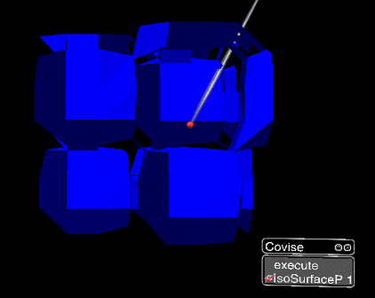

COVISE -
IsoSurfaceP

Select one point of the Isosurface using the 3D input device
As soon as you press the mouse button,
- the current position is sent to the module IsoSurfaceP, and
- the module is started